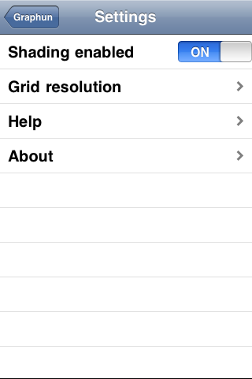

Graphun is a 3d graph visualizer built with MoSync. It evaluates a custom expression for every point on a grid and displays the result. This advanced application makes extensive use of NativeUI, and it uses an OpenGL view to display the graphs.
|  |
This example is included in the MoSync SDK installation in the /examples folder. For information on importing the examples into your workspace, see Importing the Examples. The source code is browsable on our Github repository.
This example is also available on various app stores and online marketplaces.
This application is intended for touchscreen devices. It uses NativeUI and OpenGL so it will work only on iOS (iPhone, etc.) and Android devices at this time.
When the application starts up for the first time it displays the graph for the expression sin(x*10.0*y+time)*0.5. As this expression includes time as a variable, the graphical display will continuously change as time changes. The user can change the expression by touching in the expression field and entering a new expression.
The Help page in the application provides some example expressions that the user can select for demonstration purposes. The Help page also includes advice on using the application, information about predefined constants, and so on.
The grid can be rotated to inspect the result from different angles by swiping the screen. Settings are available through the spanner icon in the lower left corner of the screen. The shading of the grid can be turned on and off, and three resolutions can be selected.